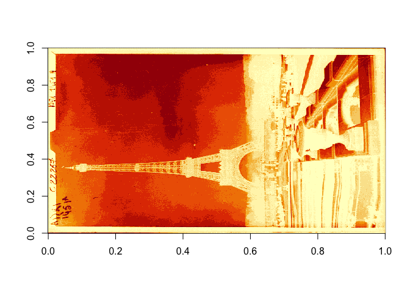

bnfimage is an R client for the BnF images API. The Bibliothèque Nationale de France (BnF), has a online repository called Gallica containing millions of scanned documents. The BnF offers an API to access all the images programmatically, bnfimage lets you access it through R.
The BnF Image API is implemented following the International Image Interoperability Framework (IIIF) with Image API implemented using v.1.1, the Presentation API implemented using v.2.0, and the Search API not yet implemented.
🔧 Installation
You can install the development version of bnfimage with:
remotes::install_github("Rekyt/bnfimage")📝 Example
You can extract images with the bi_image() function:
library(bnfimage)
eiffel_tower = bi_image(
identifier = "ark:/12148/btv1b9055204k/f1",
region = "full",
size = c(1500, 750),
rotation = 0,
quality = "native",
format = "png")
str(eiffel_tower)
#> Class 'magick-image' <externalptr>
eiffel_tower
You can get the metadata associated with this image using bi_metadata():
eiffel_metadata = bi_metadata("ark:/12148/btv1b9055204k/f1")
str(eiffel_metadata, max.l = 2)
#> List of 13
#> $ @id : chr "https://gallica.bnf.fr/iiif/ark:/12148/btv1b9055204k/manifest.json"
#> $ label : chr "BnF, département Estampes et photographie, EI-13 (2726)"
#> $ attribution: chr "Bibliothèque nationale de France"
#> $ license : chr "https://gallica.bnf.fr/html/und/conditions-dutilisation-des-contenus-de-gallica"
#> $ logo : chr "https://gallica.bnf.fr/mbImage/logos/logo-bnf.png"
#> $ related : chr "https://gallica.bnf.fr/ark:/12148/btv1b9055204k"
#> $ seeAlso :List of 1
#> ..$ : chr "http://oai.bnf.fr/oai2/OAIHandler?verb=GetRecord&metadataPrefix=oai_dc&identifier=oai:bnf.fr:gallica/ark:/12148/btv1b9055204k"
#> $ description: chr "Monuments de Paris : La Tour Eiffel : [photographie de presse] / Agence Meurisse"
#> $ metadata :List of 14
#> ..$ :List of 2
#> ..$ :List of 2
#> ..$ :List of 2
#> ..$ :List of 2
#> ..$ :List of 2
#> ..$ :List of 2
#> ..$ :List of 2
#> ..$ :List of 2
#> ..$ :List of 2
#> ..$ :List of 2
#> ..$ :List of 2
#> ..$ :List of 2
#> ..$ :List of 2
#> ..$ :List of 2
#> $ sequences :List of 1
#> ..$ :List of 4
#> $ thumbnail :List of 1
#> ..$ @id: chr "https://gallica.bnf.fr/ark:/12148/btv1b9055204k.thumbnail"
#> $ @type : chr "sc:Manifest"
#> $ @context : chr "http://iiif.io/api/presentation/2/context.json"You can query both data and associated metadata using the bi_all_data() function and get a nicely formatted tibble:
bi_all_data("ark:/12148/btv1b9055204k/f1", size = c(15, 7))
#> # A tibble: 1 x 3
#> identifier image metadata
#> <chr> <list> <list>
#> 1 ark:/12148/btv1b9055204k/f1 <magck-mg> <named list [13]>You can also provide several identifiers to bi_all_data():
bi_all_data(c("ark:/12148/btv1b9055204k/f1",
"ark:/12148/btv1b90055455/f1"))
#> # A tibble: 2 x 3
#> identifier image metadata
#> <chr> <list> <list>
#> 1 ark:/12148/btv1b9055204k/f1 <magck-mg> <named list [13]>
#> 2 ark:/12148/btv1b90055455/f1 <magck-mg> <named list [13]>💥 Rate limitation
By default bnfimage implements rate limitation through the ratelimitr package. The query are limited to a maximum of 1 every 3 seconds to avoid being blocked by the BnF server. This is the limit at which the BnF server considers the queries to be malicious. For the moment this limitation cannot be lifted.
:page_facing_up: Data license
Note that the images from Gallica have a specific license so make sure to check the license of the images you plan to reuse. As a general rule, non-commercial reuse is free of charge but the source should be speficied as “Source gallica.bnf.fr / Bibliothèque nationale de France” or “Source gallica.bnf.fr / BnF”. Commercial reuse should be license specifically following the price list.
:speech_balloon: Code of Conduct
Please note that the bnfimage project is released with a Contributor Code of Conduct. By contributing to this project, you agree to abide by its terms.